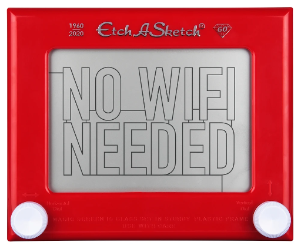
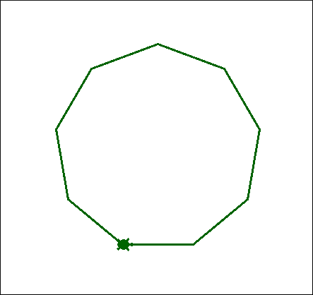
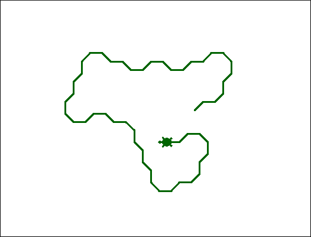
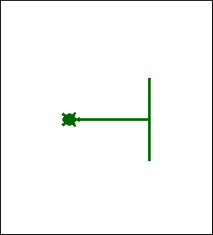
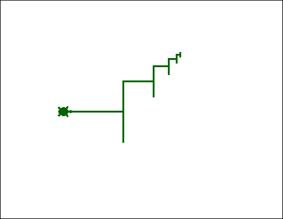
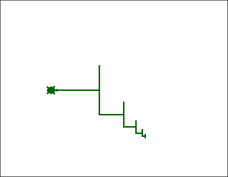
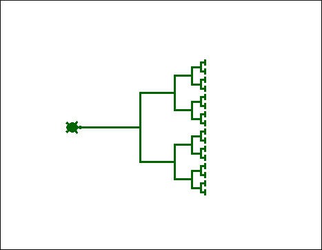
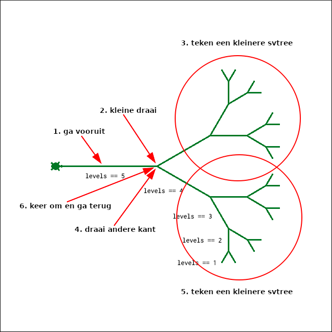

Lijnenspel¶
Recursief lijnen trekken
Lijnen trekken¶

Etch-A-Sketch, misschien ken je het wel? Met twee draaiknoppen kan je op een scherm horizontale en verticale lijnen trekken en met wat oefeningen kan je ze ook laten buigen door beide knoppen tegelijkertijd te draaien.
“Etch-a-Sketch has a lot of unique limitations and one of the big ones is that everything is connected by a single line.”
Lijnen met Python¶
Kan het? Ja het kan!

Maar soms ook niet…¶

Het werk niet altijd even goed als je turtle programma’s aanroept in IPython. Je kan bijvoorbeeld na een tweede aanroep van een programma met run tegen de Terminator fout aanlopen die bijzonder frustrerend en ook weinig informatief is!

Hoe kan je de Terminator ontwijken? De beste manier die wij hebben gevonden is om een turtle programma door Python direct uit te laten voeren (dus niet in de interactieve Python modus of IPython).
Turtle zonder IPython¶
python turtle_programma.py
Dus type python, gevolgd door de naam van het bestand met jouw turtle programma. Let op, afhankelijk van jouw systeem zal je misschien python3 moeten typen.
Voorbeeld¶
def poly(runs, TOTAL_SIDES):
"""Teken een polygoon met runs/TOTAL_SIDES
"""
if runs == 0:
return # klaar
else:
forward(100)
left(360 / TOTAL_SIDES)
poly(runs - 1, TOTAL_SIDES)
poly(9, 9)
exitonclick()
Een recursief turtle voorbeeld! De functie poly accepteert twee parameters, de run parameter bepaalt hoe vaak de functie zichzelf moet aanroepen en TOTAL_SIDES is het aantal zijden van de polygoon. Kan je de base case en de recursieve case aanwijzen?
TOTAL_SIDES noemen we in dit geval een constante, een onveranderlijke waarde. Deze waarde moet natuurlijk onveranderlijk zijn omdat de functie deze waarde bij elke aanroep nodig heeft om de hoek van de draai te berekenen. Het is een conventie (een gewoonte, of stilzwijgende afspraak) om constante variabelen in hoofdletters te schrijven, niet alleen in Python maar ook in veel andere programmeertalen.

Random lijnen¶
from turtle import *
from random import choice
def rwalk(N):
"""Zet N keer 20 pixel stappen, naar NE of SE
"""
if N == 0:
return
direction = choice(["left", "right"])
if direction == "left":
left(45)
forward(20)
rwalk(N - 1)
else:
right(45)
forward(20)
rwalk(N - 1)
Een random turtle walk! Maak (vanuit het perspectief van turtle) een draai naar noord-oost- (links) of zuid-oostelijke (rechts) richting, afhankelijk van een random keus.

De loop van een aangeschoten turtle…
Herhaling¶
Herhaling van handelingen maar herhaling in code?
if direction == "left":
left(45)
forward(20)
rwalk(N - 1)
else:
right(45)
forward(20)
rwalk(N - 1)
Het is geen probleem als je dit op deze manier schrijft (Python zal in ieder geval niet klagen!) maar je ziet dat we onszelf herhalen. Het enige dat de if en else van elkaar onderscheidt is de richting, de stap voorwaarts gevolgd door de recursieve aanroep is wat ze met elkaar gemeen hebben. Zou dit ook anders kunnen worden geschreven?
if direction == "left":
left(45)
else:
right(45)
forward(20)
rwalk(N - 1)
Dit is een herschreven versie. Het if / else blok is in nu alleen maar “verantwoordelijk” voor de richting en als dit blok is afgehandeld wordt vervolgens een stap voorwaarts gezet en wordt de volgende recursieve aanroep gedaan.
Nogmaals, is een herhaling zoals je in het eerste geval hebt gezien een probleem? Nee, maar misschien is de tweede variant beter leesbaar of maakt het in ieder geval duidelijker wat een keus voor links of rechts betekent (en maken we daarmee de bedoeling voor onszelf en wellicht ook andere lezers van onze oplossing expliciet).
Quiz¶
def chai(dist):
"""fn mysterie!
"""
if dist < 5:
return
forward(dist)
left(90)
forward(dist / 2)
right(90)
right(90)
forward(dist)
left(90)
left(90)
forward(dist / 2.0)
right(90)
backward(dist)
Wat is het resultaat van chai(100)?
Pak een stuk papier en probeer de lijn te trekken en het resultaat uit te tekenen! 100 is in dit geval natuurlijk het aantal pixels op scherm, kies op papier bijvoorbeeld voor ~10cm.
Oplossing¶

Vervolg¶
def chai(dist):
"""fn mysterie onthuld!
"""
if dist < 5:
return
forward(dist)
left(90)
forward(dist / 2)
right(90)
chai(dist / 2) # <== !!!
right(90)
forward(dist)
left(90)
left(90)
forward(dist / 2.0)
right(90)
backward(dist)
In het eerste voorbeeld (de quiz) zag je twee witregels. Wat gebeurt er als we een eerste recursieve aanroep doen? Je zal zien dat het patroon dat je net hebt uitgetekend zich gaat herhalen!

Laten we zien wat er gebeurt als we de recursieve aanroep alleen op de tweede witregel plaatsen.
def chai(dist):
"""fn mysterie onthuld!
"""
if dist < 5:
return
forward(dist)
left(90)
forward(dist / 2)
right(90)
right(90)
forward(dist)
left(90)
chai(dist / 2) # <== !!!
left(90)
forward(dist / 2.0)
right(90)
backward(dist)

Je ziet precies hetzelfde gebeuren (maar gespiegeld). Laten we ze nu combineren!
def chai(dist):
"""fn mysterie onthuld!
"""
if dist < 5:
return
forward(dist)
left(90)
forward(dist / 2)
right(90)
chai(dist / 2) # <== !!!
right(90)
forward(dist)
left(90)
chai(dist / 2) # <== !!!
left(90)
forward(dist / 2.0)
right(90)
backward(dist)

En daar zien je het volledig recursief patroon!
Een enkel pad¶
chai is een voorbeeld van een vertakking, een meervoudig pad.
Met meervoudig bedoelen we een pad dat meerdere keren wordt doorlopen, in het geval van chai moet hetzelfde pad twee keer worden gevolgd (heen en terug). Of meer algemeen, je eindigt steeds waar je bent begonnen. We gaan nu kijken naar patronen die een enkel pad volgen.
def spiral(initial_length, angle, multiplier):
"""Teken een spiraal
"""
if initial_length <= 1: # base case
return
else:
# stap voorwaarts met initial_length
# maak een draai naar links met hoek angle
# herhaal met een gereduceerde lengte (recursieve case!)
De naam zegt het al, spiral is een turtle functie die een spiraal zal tekenen (een enkel pad). Dit is één van de functies die je zelf gaat uitwerken.

spiral(100, 90, 0.8)
De functie spiral accepteert drie parameters: een initiële lengte (initial_length), een hoek (angle) en multiplier. multiplier is de waarde waarmee de initial_length steeds mee moet worden vermenigvuldigd en dit resultaat is de waarde van initial_length die aan de de volgende recursieve aanroep wordt doorgegeven.
Voor elke stap na de eerste aanroep (lengte 100) wordt de eerstvolgende lengte steeds bepaald door multiplier vermenigvuldigd met initial_length (100 x 0.8 = 80, 80 x 0.8 = 64, 64 x 0.8 = …).
Terzijde, de naam initial_length kan verwarrend zijn want het impliceert een “beginlengte”. Maar de waarde staat eigenlijk voor de afstand die turtle elke keer moet afleggen en hadden we misschien een betere naam voor deze variabele moeten kiezen, bijvoorbeeld side_length… Dit om maar aan te geven dat het kiezen van namen moeilijk, maar ook belangrijk is!
Diepte¶
Diepte als base case.
def svtree(trunklength, levels):
"""Teken een zijaanzicht van een boom
trunklength = de lengte van de eerste lijn ("de stam")
levels = de recursieve diepte tot waar moet worden vertakt
"""
if levels == 0:
return
else:
# Teken de oorspronkelijke stam (1 regel)
# Draai een stukje om de eerste subboom te positioneren (1 regel)
# Voer recursie uit! met een kleinere stam en minder niveaus (1 line)
# Draai de andere kant op om de tweede subboom te positioneren (1 regel)
# Voer opnieuw recursie uit! (1 regel)
# Draai en ga TERUG (2 stappen: 2 regels)
Dit ie een andere opgave die je gaat uitwerken, en deze functie lijkt heel erg op de functie chai! Het resultaat wordt een zijaanzicht van een boom (“side view tree”, of svtree)!
Een boom¶
svtree(100, 5)
Een boom met een eerste lengte 100 en 5 vertakkingen.

def svtree(trunklength, levels):
"""Teken een zijaanzicht van een boom
trunklength = de lengte van de eerste lijn ("de stam")
levels = de recursieve diepte tot waar moet worden vertakt
"""
if levels == 0: # base case
return
else: # recursive case
...
De base case is bereikt als levels gelijk is aan 0, vanaf dat moment moeten geen vertakkingen meer worden getekend.

Je ziet de niveaus van vertakking terug. level 0 zie je niet, vanaf dat punt wordt niets meer getekend. Welke stappen moet turtle nemen voor het tot recursie overgaat (een nieuwe tak)?

turtle start altijd in oostelijke richting!
svtree(100, 5)
ga 100 pixels vooruit
draai naar noordoostelijke richting
teken een nieuwe, kleinere boom:
svtree(75, 4)draai naar zuidoostelijke richting
teken een nieuwe, kleinere boom:
svtree(75, 4)keer om naar westelijke richting en loop 100 pixels terug
De Koch-kromme¶
Fractals met Python!
def snowflake(sidelength, levels):
"""Fractal snowflake function
sidelength: pixels in the largest-scale triangle side
levels: the number of recursive levels in each side
"""
flakeside(sidelength, levels)
left(120)
flakeside(sidelength, levels)
left(120)
flakeside(sidelength, levels)
left(120)
De Koch-sneeuwvlok is een fractal met drie identieke zijden en het zijn de zijden zelf die recursief worden gedefinieerd, niet de driehoek!
snowflake(100, 0)


De zijden worden dus recursief gedefinieerd, de functie flakeside is hier verantwoordelijk voor en jij gaat deze functie verder uitgewerken.
def flakeside(sidelength, levels):
...

Belangrijk om te onthouden is dat elke zijde altijd 4 subzijden bevat. flakeside(100, 0) is de base case en daar gebeurt niets. flakeside(100, 1) maakt het vier-zijden principe duidelijk, en elk niveau verder is een recursieve aanroep op de zijde, zoals je bij flakeside(100, 2) ziet.

Dit zijn heel lastige opgaven, want niet alleen zal je recursief moeten denken (houd ook altijd de stack in gedachten om aanroepen logisch te volgen) maar ook zal je steeds goed moeten nadenken over de handelingen en richting die turtle per stap moet uitvoeren!